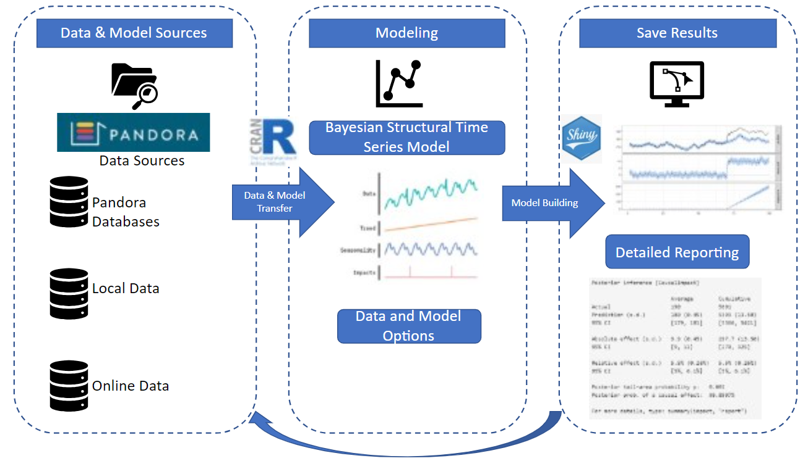
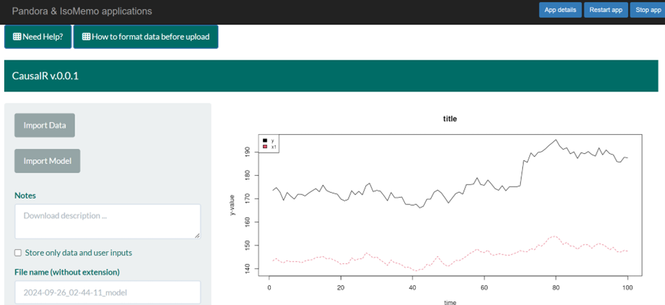

Summary
Source:paper.md
CausalR is a R-Shiny user-friendly interface for the CausalImpact R package, which leverages the Bayesian modeling capabilities to estimate the causal effect of an intervention on a time series (Brodersen et al., 2015). The causal impact is inferred by comparing the counterfactual posterior and the observed data, but users are currently not able to easily navigate to the analysis and visualize the results. Going one step beyond, CausalR is able to generate and visualize a counterfactual prediction, or “what would have happened”, with highly customized features. In addition, CausalR introduces a new workflow streamlining the causal analysis by giving users high input data customization, automating model building, and generating informative visualizations. Furthermore, CausalR also offers a direct connection to the API of the Pandora data platform, one of the largest archeological databases where various types of time series of data are made available.
Statement of need
In numerous fields such as economics, marketing, historical research, and public health, it’s crucial to understand the causal effects of events and interventions for policy-making, decision-making, and risk assessment analysis. This involves evaluating how interventions have impacted key variables over time. An increasingly reliable method for these evaluations is the Bayesian counterfactual analysis of time series data (Landau et al 2022, Liu et al 2022, Kumar et al 2023, Yabe et al 2020).
Even though CausalImpact provides an innovative technique to assess causal impact, it lacks a few user-friendly features. CausalImpact R package employs Bayesian structural time-series (BSTS) modelling to capture the contributions from multiple components, including regression components for contemporaneous covariates, towards a target time series (Scott & Varian, 2014). Although the impact can be visualized via point wise and cumulative view, it still lacks customizable visualizations.
We introduce CausalR, a R-Shiny application that provides a user-friendly interface to enhance CausalImpact usage. Our goal is to broaden the adoption of Bayesian counterfactual analysis across various applications by making it more accessible to those less proficient in R coding. CausalR incorporates modules for data import and the import and export of model instances, directly linking up to archeological, radiocarbon, and stable isotopic time series data from the Pandora open data platform. The seamless data integration is one of the more significant features of CausalR. In addition, another noteworthy feature is import and export model instances, which can be stored at Pandora or other online repositories. This facilitates easy access to the models users built and promotes collaborative research projects, so that other researchers can enhance reusability and test reproducibility.
Overview

Figure 1 shows the generalCausalR workflow.
Step 1: Data Upload and Configuration
Users may load time series data in a CSV or Excel format. The first column of the file is the predictor, and the remainder are the covariates. Users may include the time sequence in a date format as the first column. Users can upload local files, using URL file pointers, and directly from the Pandora data platform (https://pandoradata.earth/). A graph is shown representing the target and covariate time series . Available via the interface are help files on interface use.

Figure 2.CausalR interface shows the data time range selection options and the graph of an imported time series.
Step 2: Pre- and Post-Period Specification
Users identify the time ranges corresponding to the periods before and after the event or intervention under study. Moreover, users provide date or index values, with the latter corresponding to time series row numbers when dates are absent as a first column.
Step 3: Model Selection and Execution
By default, the CausalImpact model lacks a local linear trend component. As an alternative, users may choose to input their own code into a custom textbox to render the Bayesian Structural Time Series (BSTS) model. Following model selection or customization, the code is then run. In addition, to ensure the security of the software, the custom code functionality is isolated from the main operation system console to prevent malicious code injections.
Step 4: Results Visualization and Analysis Report
CausalR includes three customizable graph outputs: 1) plot of target time series data vs. counterfactual prediction; 2) plot of pointwise difference between data and counterfactual; 3) cumulative difference between data and counterfactual. Users can export the plot values in a table format. A text report is also displayed, consisting of summary statistics for the post-intervention period and a descriptive interpretation of the results as issued by CausalImpact. Any R errors are also displayed in the text report.
Usage and Downloading
-
CausalRcan be installed locally by downloading the package from its GitHub repository. - Installation instructions, including instructions in video format, are available at the repository. Users can also employ a Docker container file for local installations that removes the need to install R or any dependencies here:Docker Container.
- Online user-friendly interface for
CausalRis also available here in our CausalR Web App. Users can save and share model instances. When these are deposited at Pandora, they can be directly loaded fromCausalR.
Conclusion
CausalR is a tool that enhances access to Bayesian conterfactual analysis via a user-friendly interface based on the Causalimpact package. CausalR improves the user experience with customizable features, streamlined workflows, and seamless data integration with open data platforms like Pandora. These improvements make it easier for researchers across various fields to conduct sophisticated causal impact evaluations regardless of coding expertise. Additionally, its ability to import, export, and store models fosters collaboration and reusability for scholars and researchers in their workflow.